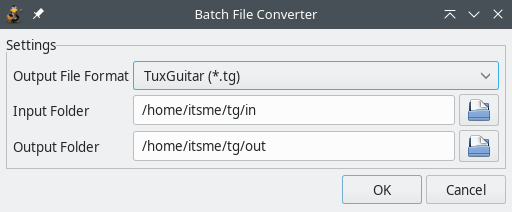

tuxguitar-converter is batch file format converter. It allows you to convert number of files from various file formats (*.gpX, *.ptb, *.tef, *.tg) into destination file format, keeping the file names but changing the format (and extension of a file).
Converter simply tries to load every file and save/export it into destination file.
So supported input formats are files TuxGuitar can load and import, and destination format is every format TuxGuitar can save into or export. You can check for supported file formats. For some exporter plugins that have various exporting options, default options are used.
tuxguitar-converter plugin is included on all bytecode TuxGuitar distributions as default. If you downloaded a compiled TuxGuitar package, you shouldn’t bother to install it manually.
Of course you may want rebuild and install the plugin.
To install the plugin, you must copy tuxguitar-converter.jar into $TUXGUITAR_HOME\share\plugins

You access the converter dialog through Tools→“File format batch converter”.
On the dialog you must specify input folder. Input folder and its subfolders contain files that will be converted.
Output folder is folder in which new files will be stored. If destination folder you specified doesn’t exist, it will be created.
Output file format is used to specify file format of new created files. It will display all supported formats (which might depend on your installed plugins).
After you confirm the converting new window will appear showing you the progress. You can cancel the process anytime.